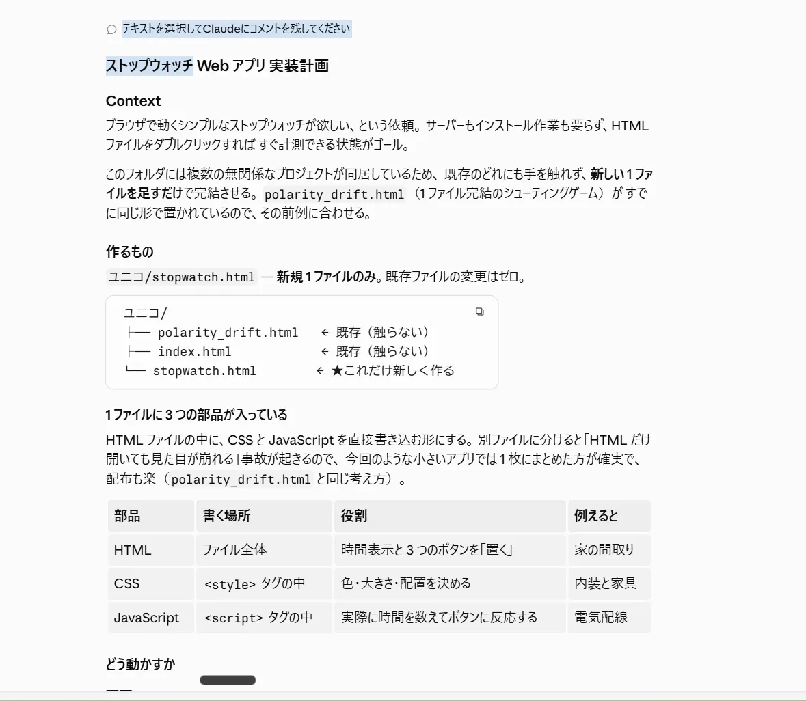
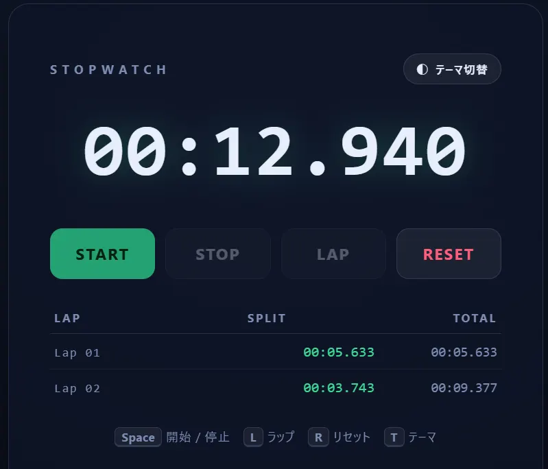
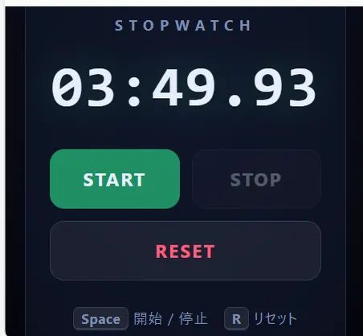

課題
ブラウザで動くストップウォッチが欲しい、という依頼。サーバーもインストール作業も要らず、HTMLファイルをダブルクリックすればすぐ計測できる状態がゴールです。
ただし本題はそこではありませんでした。どこまで細かく条件を書けば、人が見に行かなくても仕上がるのかを試すのが目的です。
設計
作業フォルダには無関係なプロジェクトが同居していたので、既存のどれにも触れず、新しい1ファイルを足すだけで完結させる方針にしました。同じ形で置かれている1ファイル完結のゲームが先例としてあったので、それに合わせています。

CSS と JavaScript は別ファイルに分けず、HTML に直接書き込む形にしました。分けると「HTML だけ開いても見た目が崩れる」事故が起きるためです。
渡した完了条件
自走の判定役はコマンドを実行せず、ファイルも読みません。会話に出力された内容だけで達成を判定します。つまり条件は「Claude 自身の出力として会話に現れうる形」でしか書けない。そこを踏まえて、4つに絞りました。
| # | 完了条件 |
|---|---|
| 1 | Start / Stop / Reset が動く |
| 2 | 「分 : 秒 . ミリ秒」で表示する |
| 3 | 右上に「テーマ切替」ボタンがあり、押すと背景色と文字色がダーク / ライトで切り替わる |
| 4 | ページをリロードしてもテーマ設定が保持される |
「きれいにして」「いい感じに」のような主観語は入れていません。測り方が決まらない条件は、永久に達成されないか、逆に何もしていないのに達成と判定されるかのどちらかになります。
詰まった点
ここが一番おもしろいところでした。条件は4つとも満たされて戻ってきたのですが、自分で検証している最中に3つの不具合を見つけて直していた。
1. ライトテーマのコントラストが足りていなかった
アクセントに使っていた緑が、本文サイズで約 3.9 : 1。ダーク側では START ボタンの文字が 4.19 : 1。どちらも読みやすさの基準 4.5 : 1 を下回っていました。緑を明るく調整し、主要6組み合わせすべてを 4.5 : 1 以上に——最小 5.15 : 1、ラップ区間 6.15 : 1、本文 15.8〜17.7 : 1 まで持っていっています。
2. 切り替わり方がちぐはぐだった
body の文字色だけに 0.2 秒のフェードが掛かっていて、背景（グラデーションなのでトランジションが効かない）と表示部は即時。テーマを切り替えると文字だけ遅れて追いつく状態でした。トランジションを外して、全部同時に切り替わるようにしています。
3. 狭い画面で見出しと接触していた
テーマ切替ボタンを絶対配置していたため、375px 幅で見出しとの隙間が 3px しかありませんでした。ヘッダ行に組み込む形に変更し、320px でも 34px の余白・横溢れ 0px を確認しています。
検証
静的サーバーで実際にファイルを開き、ボタンのイベントハンドラを通して操作した実測値です。
| 条件 | 結果 | 実測値 |
|---|---|---|
| 1 | OK | Start → 00:01.200、Stop 後 1 秒間そのまま固定、再開して 00:01.905（累積が継続）、Reset → 00:00.000 |
| 2 | OK | 00:00.512 / 00:00.912 など全サンプルが /^\d{2}:\d{2}\.\d{3}$/ に一致 |
| 3 | OK | 押下で data-theme が dark ↔ light、背景グラデーションと文字色が両方変化 |
| 4 | OK | light → リロード → light、dark → リロード → dark の両方向で確認。保存値と表示テーマが常に一致 |
コンソールエラーは 0 件。作業前後で作業ディレクトリの状態も完全一致で、検証用に作った一時コピーは削除済みです。
結果


配色は12個のカスタムプロパティに集約させました。色を直書きした箇所が残っていると、テーマを切り替えたときに片方だけ取り残されるためです。ストレージへの読み書きは try / catch で包んであり、保存できない環境でも切替自体は動きます。
学んだこと — 測れる条件だけが、人の手を離れる。
「読みやすくして」では何も起きませんでした。「コントラスト比を実測して 4.5 : 1 以上にし、その数値を出力する」と書いた瞬間に、自分で測って直すようになる。判定役はファイルを読めないという制約が、結果的に「実測値を会話に出す」という良い習慣を強制しています。